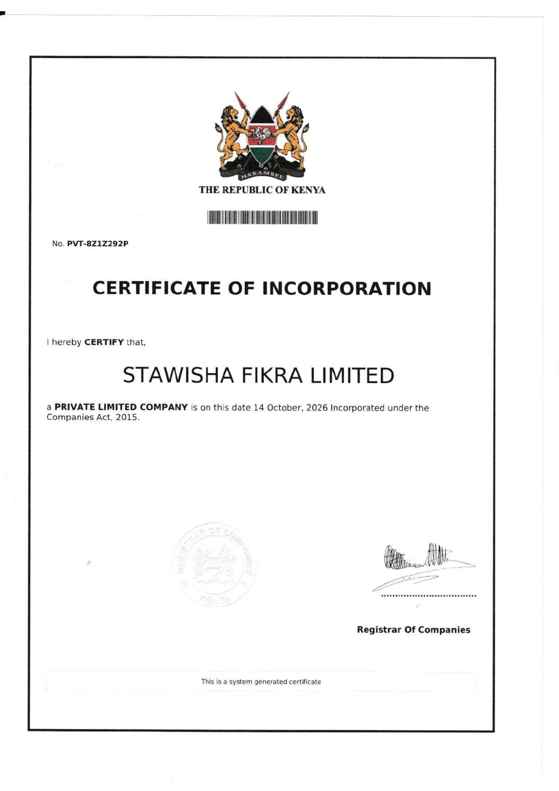

Republic of Kenya · registration record
Certificate of Incorporation
A public presentation of the official Certificate of Incorporation for Stawisha Fikra Limited.
- Company
- Stawisha Fikra Limited
- Company type
- Private Limited Company
- Company number
- PVT-8Z1Z292P
- Date of incorporation
- 14 October 2026
- Governing law
- Companies Act, 2015
Official document
Certificate issued by the Registrar of Companies.
The page below reproduces the supplied one-page Certificate of Incorporation. Supporting records and additional due-diligence material are available directly from the company when appropriate.
